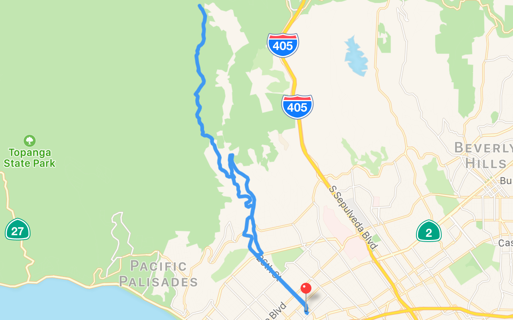

Router Go
Router Go is the best way to view .GPX, .TCX, .KML, .LOC, Garmin (.FIT), and Pioneer (.DB) GPS route files on your iOS device.

Download it & grab some sample routes.
For help or support with Router Go, send an email.
- v1.3.0
- Coloured icons in info view correspond with paths in graph view
- Path for velocity
- Housekeeping
- v1.3.0
- Improved handling of time in elevation/progress view
- Improved date/time parsing in TCX files
- iOS 13 dark mode
- Housekeeping
- v1.2.1
- Normalized power
- Calories for route
- Housekeeping
- v1.2.0
- Split view on large screens
- Support for external maps (Google, etc.)
- Display location-less workouts
- v1.1.19
- Support for external displays
- v1.1.18
- Don't include empty point properties in info view
- v1.1.17
- Keyboard shortcuts
- Improved selection title in info view
- Clear selection from info view
- v1.1.16
- Fixes for iPad Pro
- v1.1.15
- Graph view enlarged in landscape view
- Improvements to trackpoint properties
- Housekeeping
- v1.1.14
- Relative units preference
- 3x assets for high-res displays
- v1.1.13
- Icon for trackpoint timestamp
- Improved date/time formatting for trackpoint timestamp
- v1.1.12
- Improve "show my location on map"
- Minimum elevation in route properties
- Increased precision in route polyline
- v1.1.11
- Elevation loss (AKA: total descent) and number of trackpoints included in route/selection properties
- Improved elevation profile drawing
- Localization tweaks
- v1.1.10
- Show your location on the map
- v1.1.9
- French localization
- Fixed FIT date parsing across all locales
- Improvements to route & lap selection
- v1.1.8
- Multi-touch (aka: 2 touches) on elevation view
- Choosing points of interest from a selection in the info view results in the proper trackpoint selection on map/graph
- v1.1.7
- Differentiate between elapsed time & moving time
- v1.1.6
- Vastly improved responsiveness while scrubbing on elevation view
- Selected lap shows polyline on the map
- v1.0.5
- Elevation graph/scrubber
- v1.0.3
- Navigation controller
- v1.0.2
- Metric/imperial preferences
- v1.0.1
- Add support for .TCX, .KML, .GPX, .LOC, and Pioneer (.DB) GPS files
- v1.0.0
- Initial release